關於我們
2026 年隊伍
GEMS Taiwan 是一支位於臺灣臺北、已成立五年的隊伍。在拿下兩個前十名的成績與一次大獎之後，我們對今年的計畫依然充滿抱負。有鑑於小農在種植作物時面臨的種種挑戰，如滲透壓、高溫與鹽分逆境，我們希望能透過 iGEM 減緩這些困境。藉由推廣至各校的教育計畫，我們將讓學生認識農民一年中常見的逆境，以及農作物與日常生活的關係。教育計畫的對象涵蓋國小、國中及高中學生。
Wetlab
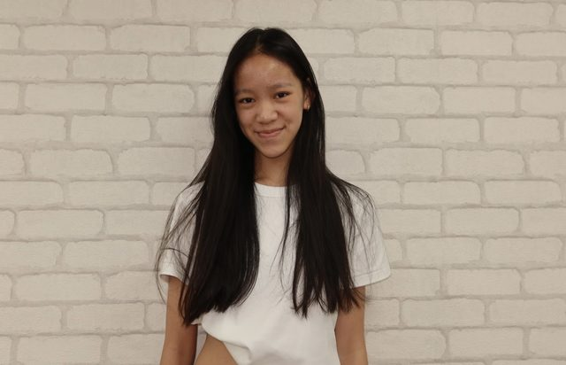
Abby Kao
嗨，我是 Abby！我最喜歡的興趣是跳舞和體驗世界各地的不同文化。說實話，我自己也很驚訝怎麼會加入這個 iGEM 隊伍，但透過我們的努力，我非常期待未來會帶給我們什麼。
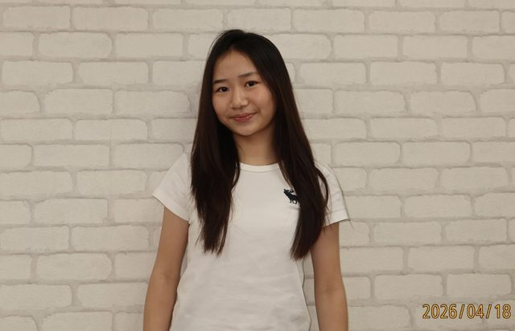
Abby Tsai
嗨！我是 Abby Tsai，我喜歡聽 R&B、看電影和旅遊。我也在管弦樂團裡吹奏雙簧管。我因為對合成生物學深深著迷而加入 iGEM，非常期待能與這個隊伍一起創造出色的成果！
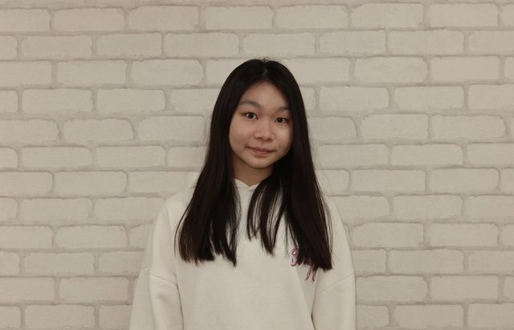
Abigail Lin
嗨，我是 Abigail！我喜歡解謎小說，對我而言，植物的世界就是最終極的未解之謎。課業之外，我喜歡畫畫、潛水和童軍活動。我加入 iGEM 是想探索生物系統的「藝術」。就像拉大提琴一樣，iGEM 需要許多的和諧與創意！
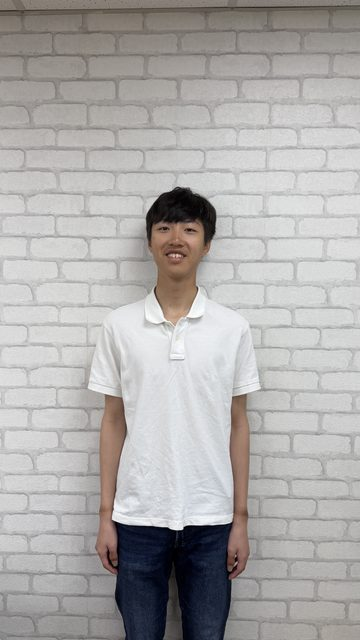
Alex Li
嗨！我是 Alex。我喜歡玩桌遊和聽音樂。我加入 iGEM 是因為熱愛學習生物，希望能一起打造出一個真正改變世界的重要計畫。
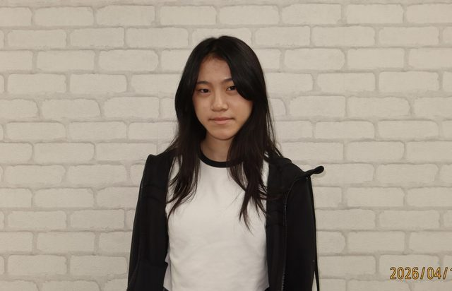
Audrey Hsieh
嗨！我是 Audrey，我喜歡聽音樂和旅遊。我加入 iGEM 是為了更深入了解合成生物學，並結識更多有相同熱忱的朋友！
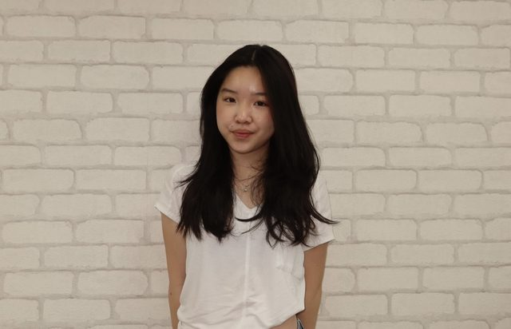
Chloe Wu
嗨大家，我是 Chloe！空閒時我喜歡逛街、嘗試新餐廳，以及和朋友出去玩。一開始加入 iGEM 是為了認識合成生物學、探索自己對科學的熱情，但後來發現它遠不止於此——它真正幫助我建立思考方式、與他人合作，以及為生活帶來有意義改變的能力。
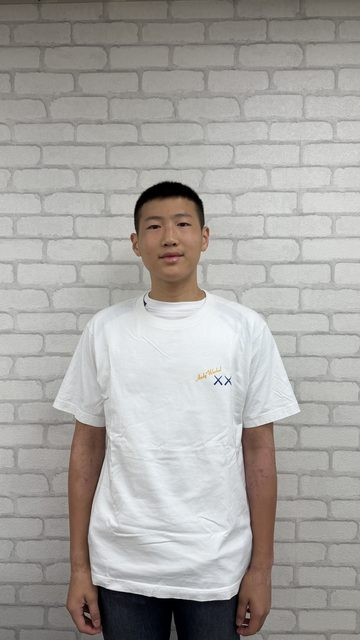
Ethan Chang
你好！我是 Ethan。我的嗜好是打排球、擊劍和追 Netflix 影集。起初我加入 iGEM 是為了從傳統教育以外的角度對世界產生全球性的影響，但我也非常期待能與隊友一起贏得 iGEM 競賽！
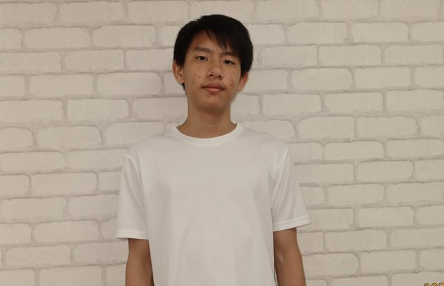
Joshua Hong
嗨，我是 Joshua。我喜歡戶外活動、電腦相關的事物和生物學。加入 iGEM 讓我得以探索以前未曾深入的生物學領域，所以我非常珍惜這個機會。
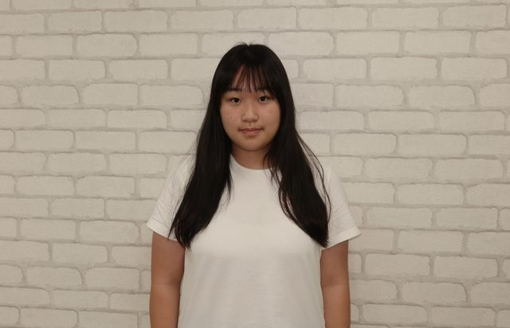
Naomi Lin
嗨，我是 Naomi。我喜歡藝術、旅遊和音樂，也對生物研究有濃厚的興趣。加入 iGEM 讓我能擴展知識、與同樣熱愛生物的夥伴合作，共同為現實世界的問題帶來有意義的貢獻。
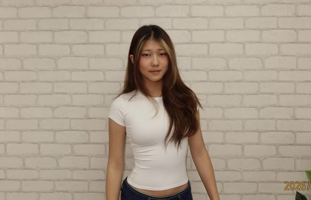
Olivia Lin
嗨，我是 Olivia Lin！空閒時我喜歡聽音樂、健身跑步和購物！我加入 iGEM 是因為持續對生物學（尤其是人體生物學和腫瘤學）充滿熱情，也想獲得研究和Wetlab的實作經驗。除了在巴黎盡情玩樂，我也期待能與新朋友在深夜一起研究整合生物學，為社會創造影響！
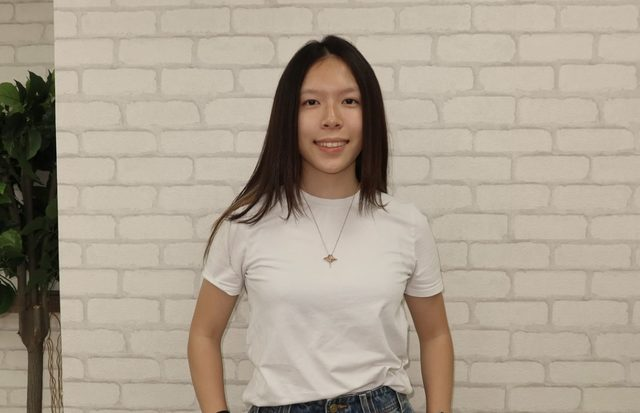
Phoebe Chen
嗨，我是 Phoebe！關於我，就是我超愛動物和聽音樂，但我最著迷的還是閱讀小說。我因為對生物學的興趣而加入 iGEM，也有一部分是希望能遇到和我一樣有熱忱的人。期待十月在巴黎度過美好的時光！
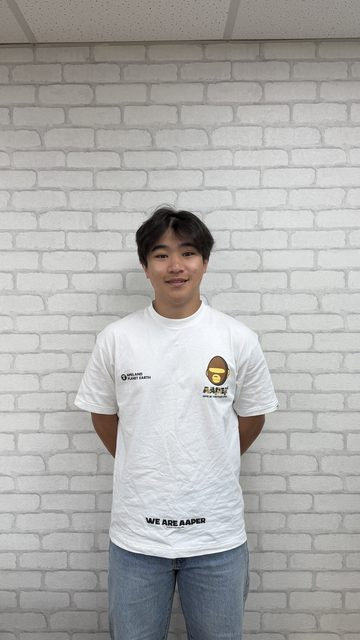
Ryan Yuan
嗨，我是 Ryan Yuan！我喜歡聽 R&B 音樂，也熱愛在排球場上奔馳。我對生物和化學都極度熱愛，希望這份熱情能充分展現在我們 iGEM 隊伍的努力中。能繼續留在隊伍裡是我的榮幸，因為它不只教給我合成生物學，也讓我學會如何讓自己與眾不同、真正做出改變。
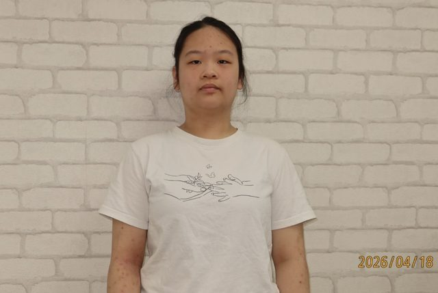
Sara Chen
嗨！我是 Sara Chen。我喜歡聽爵士樂、演唱各種類型的歌曲，以及探索生物學的各種問題。我加入 iGEM 是希望獲得分子選殖技術的實作經驗，並拓展我對生物學的視野。我也非常期待能親手創造出成果，並與同樣對生物學充滿熱情的人分享。
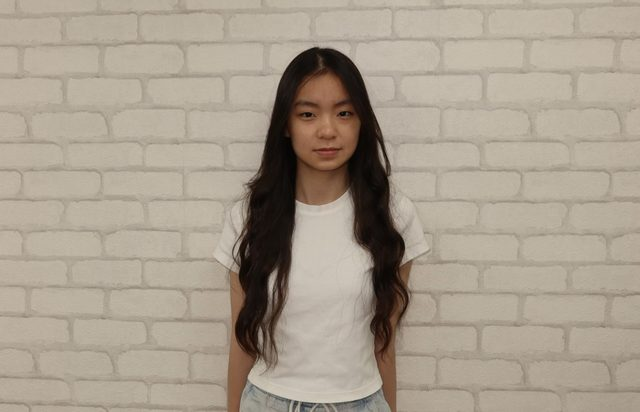
Sarah Chou
嗨！我是 Sarah。我加入 iGEM 是因為熱愛生物學，喜歡待在實驗室裡。空閒時，我喜歡看 YouTube 和一些有趣的短影片。
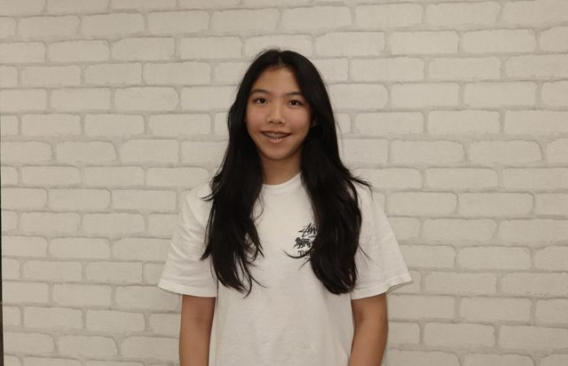
Sophie Chen
嗨，我是 Sophie。我對數學和化學很感興趣，加入 iGEM 是為了參與一個有意義、能帶來改變的計畫。課業之外，我喜歡運動、藝術和音樂。
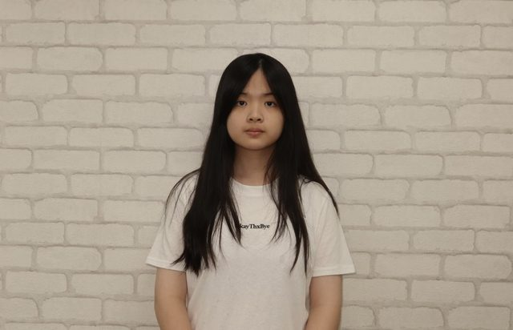
Sophie Huang
嗨 :)，我是 Sophie Huang。我喜歡探索生物學和化學這兩個令人興奮、充滿奧秘的世界，希望能結識更多對此感興趣的朋友，並更精進分子選殖的技術。這正是我選擇加入 iGEM 的原因。課業之外，我也喜歡閱讀各類書籍、看電影和收集絨毛玩具。
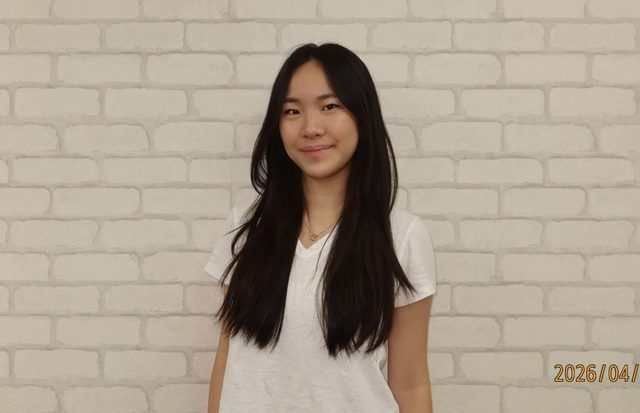
Sophie Liu
嗨，我是 Sophie！我喜歡聽音樂、在咖啡廳唸書，以及和朋友出去玩。我加入 iGEM 是為了能與志同道合的夥伴合作，共同進行一個有意義的現實世界計畫。
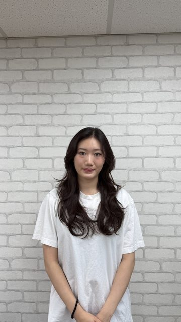
Sophia Yeh
嗨！我是 Sophia，我喜歡一邊聽音樂一邊學習化學等科目！我加入 iGEM 是為了更深入了解合成生物學，並與他人合作打造一個兼顧科學進步與現實問題解決的有意義計畫。
Drylab
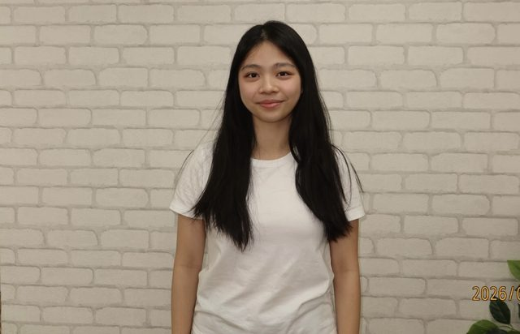
Anna Chuang
嗨，我是 Anna Chuang！除了對生化的熱忱，我也是一名認真的游泳選手，用訓練作為犒賞自己吃甜食的理由！我加入 iGEM 是希望能與更多志同道合、把科學視為與世界互動最自然方式的人一起做出貢獻！
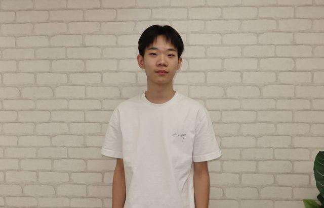
Anton Lin
嗨，我是 Anton。我對工程和機器人學很感興趣，加入 iGEM 是為了更深入了解合成生物學，以及如何解決現實世界的問題。課業之外，我也喜歡打高爾夫球、旅遊和音樂。
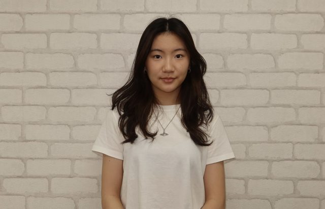
Audrey Chu
嗨，我是 Audrey Chu！我喜歡旅遊、跳舞和聽音樂。我對生物學有濃厚的興趣，加入 iGEM 是為了更深入探索這份熱情，並與同樣充滿熱忱的人一起合作。非常期待今年能在巴黎的 Grand Jamboree 分享我們的旅程！
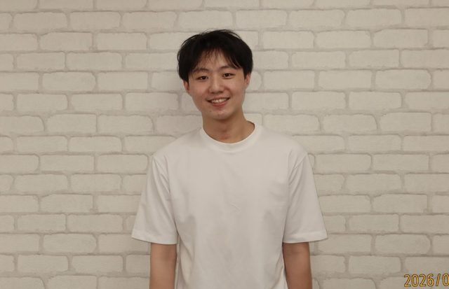
Ethan Liu
嗨，我是 Ethan！我致力於生物科技領域，目前正在尋求透過創新農業系統解決世界糧食短缺問題的方法。我加入 iGEM 是邁向與志同道合的人一起創造有意義影響的第一步。期待將想法化為真正的解決方案。
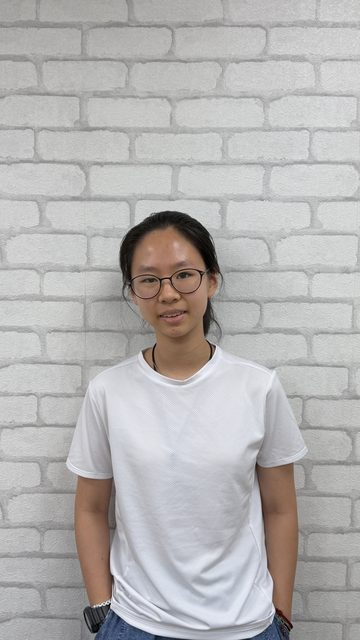
Eva Zhong
嗨，我是 Eva！！我喜歡閱讀、做料理和玩遊戲！我加入 iGEM 是因為想深入探索某個特定主題，而 iGEM 讓我得以實現這個願望。
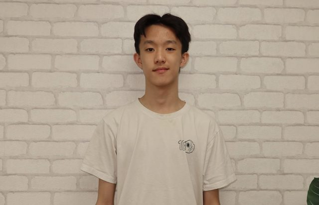
Felix Yu
嗨，我是 Felix。我對生化和工程很感興趣，但整體來說，我就是喜歡看到系統運作的成就感。我加入 iGEM 是為了幫助解決現實問題，將有影響力的想法轉化為實際可行的解決方案。另外，我有一隻胖狗和一隻胖貓。
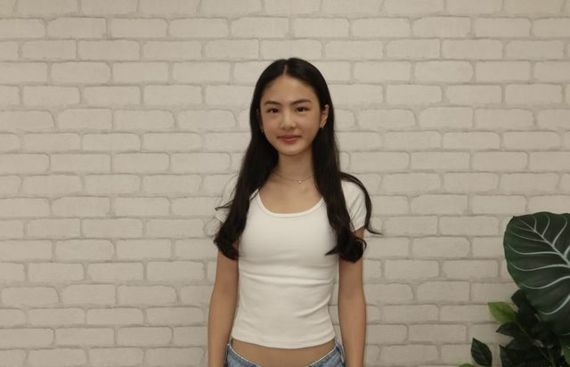
Jacquelyn Inocencio
嗨！我是 Jacquelyn，我加入 iGEM 是因為真的很有興趣用合成生物學創造實際、有用的解決方案。我熱愛動手做科學，思考概念要如何在實驗室之外真正運作。課業之外，我喜歡探索新的餐廳、和朋友出去玩，以及購物！
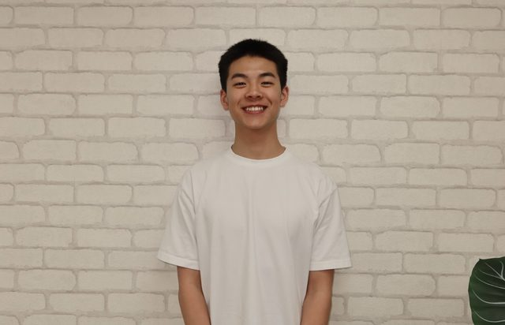
Noah Tau
嗨，我是 Noah，我的熱情在於機器人學，目前特別專注在 FRC。我加入 iGEM 是因為對工程的各個面向都充滿熱情，很想探索不同類型，拓展視野，進一步認識我們所處的世界。我期待能與其他充滿熱忱的努力者一起合作，理解艱深的主題，並學習如何更好地協作。
人類實踐
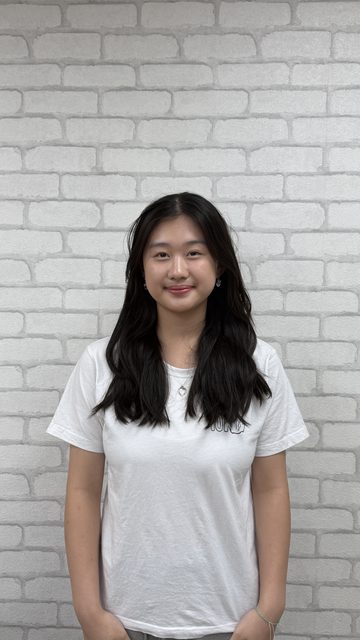
Mia Guo
嗨，我是 Mia！iGEM 之外，我喜歡看愛情電影、擊劍、聽音樂和看 F1。我因為熱愛生物學而加入 iGEM，非常期待能參加巴黎的 Grand Jamboree！
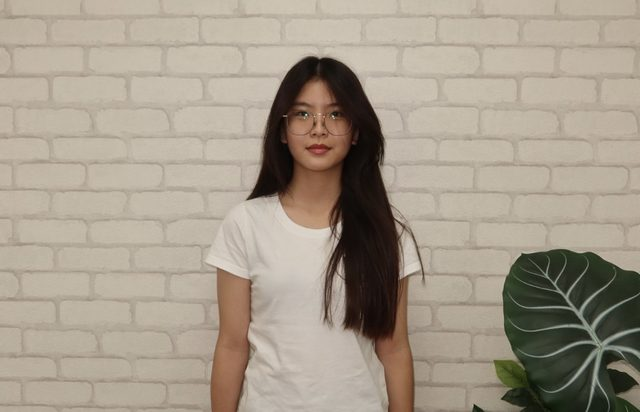
Olivia Du
嗨，我是 Olivia！iGEM 和課業之外，我喜歡跳舞、滑手機，以及什麼都不做。加入 iGEM 讓我能進一步探索對生物學的興趣，學到更多！
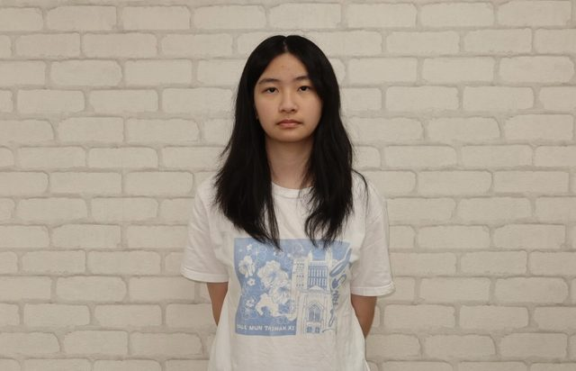
Renee Kuo
嗨，我是 Renee！！！^^ 我喜歡各種類型的音樂、書籍和遊戲。我加入 iGEM 是因為想從事一個能讓我深入學習生物學——我最喜歡的科目之一——的計畫。
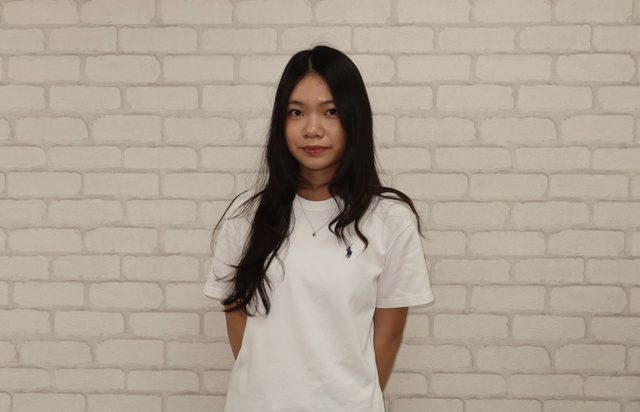
Sophia Lin
嗨，我是 Sophia！我喜歡打網球、旅遊和親近大自然！我一直對生物學充滿熱情，很期待能透過 iGEM 學習和探索更多這個領域的知識！
顧問
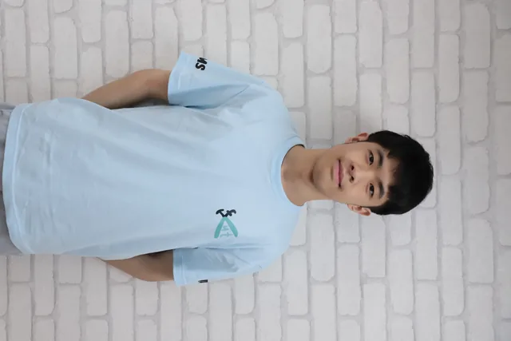
Caden Wu
嗨，我是 Caden，是 GEMS Taiwan 的顧問。繼在 2025 年隊伍擔任Drylab成員的精彩一年後，我決定以顧問身份回歸，盡可能地透過分享知識與經驗來支持隊伍。
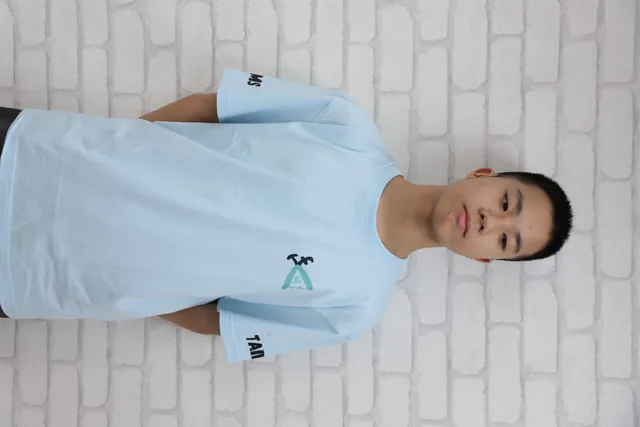
Dylan Huang
嗨，我是 Dylan。我以顧問的身份加入 iGEM 隊伍，因為我真的對合成生物學很感興趣，也喜歡參與連結工程與生物學的計畫。我很期待能支持隊伍、從過程中學習，並幫助深化計畫背後的科學依據。
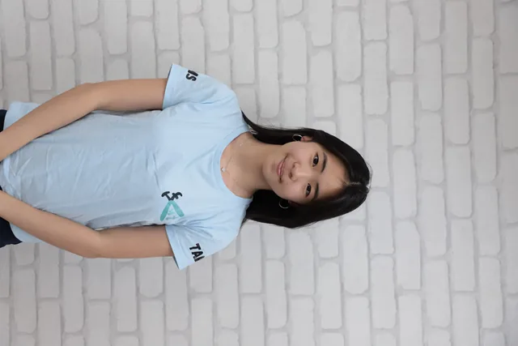
Elizabeth Wong
嗨，我是 Elizabeth（Eli），Taipei American School 即將升高三的學生。除了科學研究之外，我也喜歡跳舞。我希望能運用過去在合成生物學的經驗，支持下一屆的 GEMS Taiwan 隊伍。
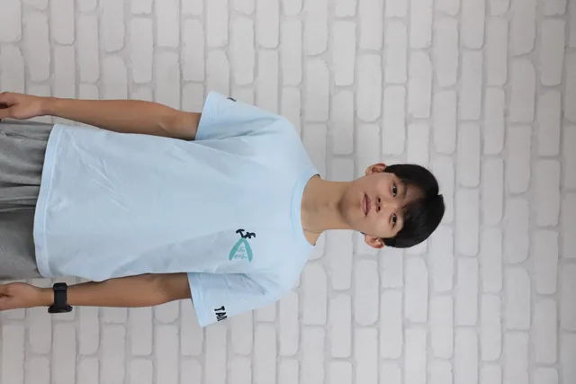
Hachi Wu
嗨，我是 Hachi，我是 Gems Taiwan 2025 的專案負責人和Wetlab負責人。對合成生物學的熱忱驅使我再次參與 iGEM，這次以顧問的身份與新成員分享經驗。我期待能支持並與隊伍合作，共同打造一個有意義的計畫。
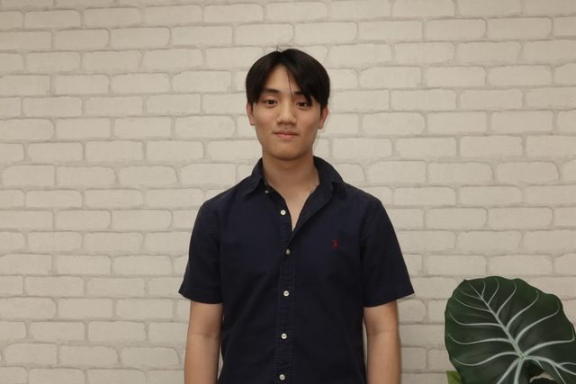
Ian Cheng
嗨！我是 Ian，今年擔任顧問。我對生態學和動物學充滿熱情，並將這份熱情帶入合成生物學。我希望能透過Wetlab的知識以及我的藝術能力來支持隊伍。
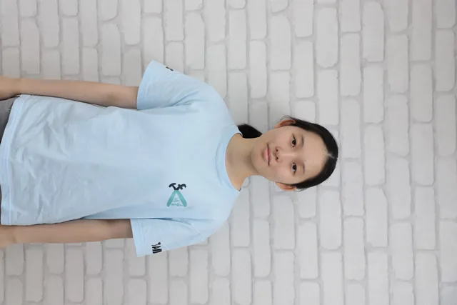
Katherine Chen
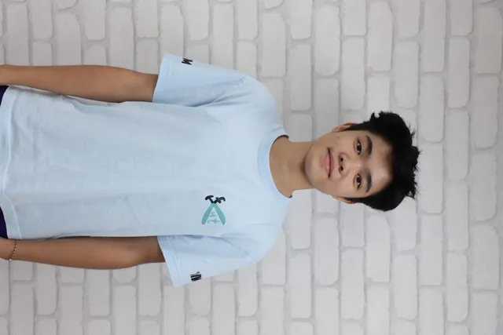
Oscar Huang
嗨，我是 Oscar，TAS 的高二學生，也是 GEMS Taiwan 現任 advisor。我曾是 2025 年隊伍的 Drylab 成員，希望能將去年所學帶給隊伍，創造有意義的影響。我也期待繼續把握 iGEM 所提供的各種學習機會，無論是團隊合作還是專業技能。
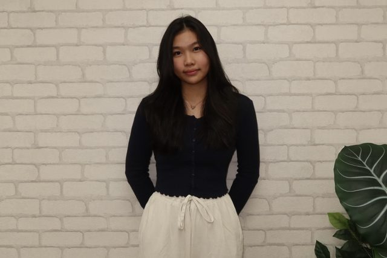
Venus Tay
嗨！我是 Venus，2025 年 Gems Taiwan iGEM 隊伍的舊成員。在去年的精彩經歷以及對生物學的熱情驅使下，我選擇以顧問的身份回歸，支持 2026 年的隊伍、分享Wetlab經驗，並繼續探索合成生物學的影響力。
指導老師
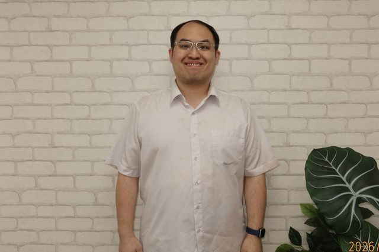
Chi-Cheng Hsieh
Chars，擁有逾十年分子與細胞生物學研究經驗的資深研究員。我在 GEMS Academy 培育並賦能學生，與他們一同探索合成生物學的前沿。
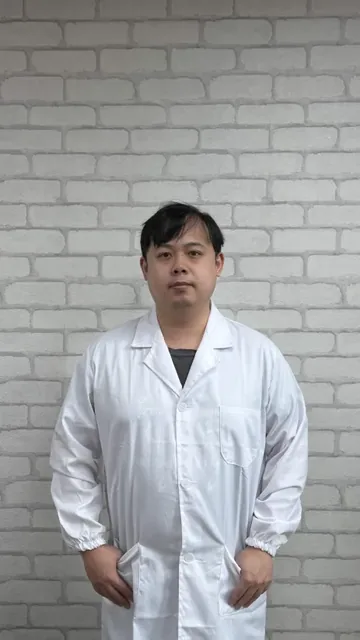
Gabriel Ng
大家好，我是 Gabriel，Wetlab 指導老師。今年我將引導生物學實驗，期待未來幾個月能和大家一起學習很多東西！
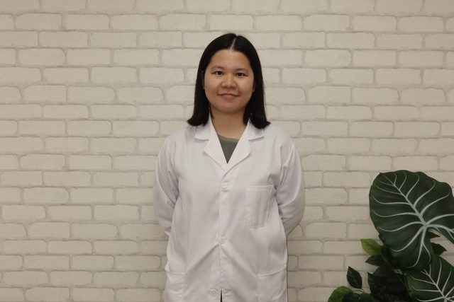
Gina
嗨，我是 Gina，Wetlab 指導老師之一。我對科學充滿熱情，有豐富的實驗室實作經驗，也很享受帶領學生進行動手操作的實驗。
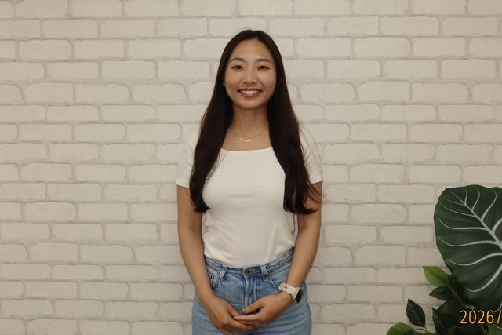
Jessie Lau
哈囉！我是 Jessie，HP 指導老師。多年來我致力於教授化學並帶領各種科學計畫。看到學生將所學應用於現實世界讓我非常有成就感——非常期待看到今年 iGEM 隊伍對社會所帶來的影響！
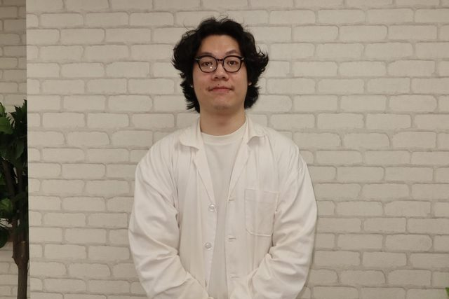
Timmy
我是Drylab 指導老師 Timmy。今年我們讓植物承受逆境，看看誰先撐不住——有時是系統，有時是我們自己。沒關係。不是所有事物都能熬過逆境。但往往就是在這個過程中，才能找到真正的珍寶。